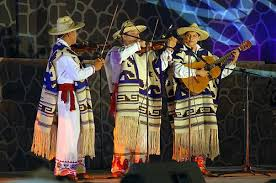
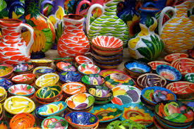
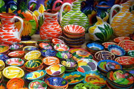

Michoacán, un estado rico en cultura e historia, se caracteriza por una serie de costumbres y tradiciones ancestrales, especialmente las del pueblo purépecha, que se manifiestan en su gastronomía, artesanías, música, noche de muertos, semana santa y celebraciones religiosas como danza de viejitos. Lo más tradicional es ofrecer atole y tamales para los invitados y las roscas suelen tener más de un niño oculto.


|
 

|